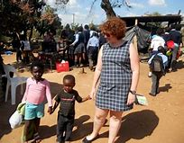
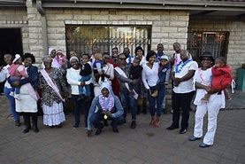
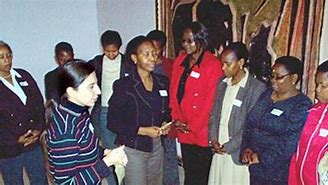
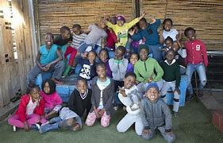

Enhance a lasting assistance to orphaned kids and assisting them to achieve their potential
Join UsHope for All Foundation was started in 2010 by a team of hopeful volunteers, whose aim was to help the orphaned and vulnerable children get access to education, health and mentorship to ensure they live better lives. During the last ten years of the existence, the foundation has reached more than 3,000 children in both rural and urban setting.




We offer access to quality education, school supplies and mentoring opportunities to help children follow their dreams and access a brighter future.
Our foundation helps assure that children are receiving good medical care, support and instruction on maintaining wellness and a healthier community.
Our meal programs, and additional provisions help us to combat hunger and ensure that children are properly nourished to grow and develop.
We collaborate with donors, local communities and volunteers to establish safe spaces, empowerment workshops and avenues through which every child can thrive.
🌍 Together, we can uplift communities and advance the profession of social work in South Africa!